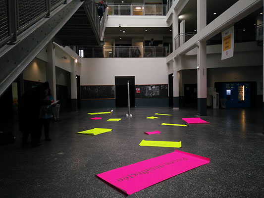
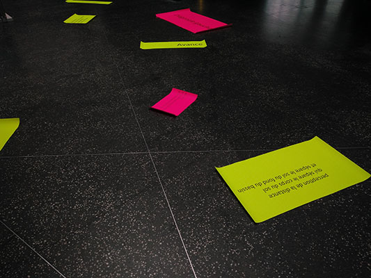
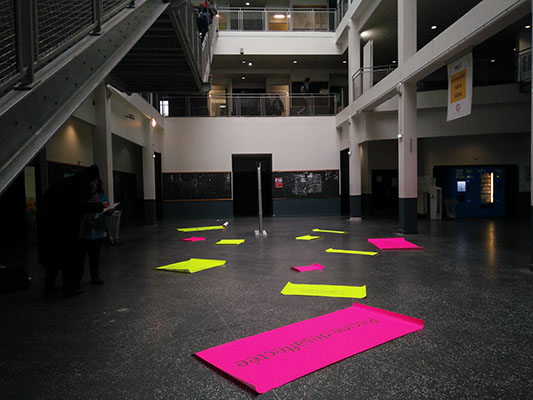
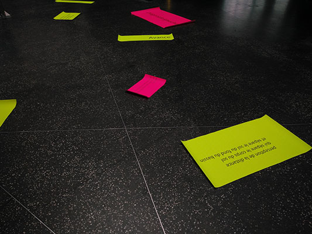

Piscine
 



enfoncé dans le sol
rectangle bleu
Piscine désafectée
dans le lieu
marche sur le dallage
petits carreaux blancs
joints gris
parfois un carreau noir plus petit
au mur une mosaïque
failles
fissures,
peinture craquelée
Avance dix pas
trou comme impacte d’un objet lourd
ou quelqu’un qui creuse un sous terrain
Diagonale gauche
un toboggan
trois virages intérieurs
trois virages extérieurs
un looping
Plastique PVC
très dur, s’érige
Passe le doigt sur le plastique
décolle la poussière
Monte
dessous
le quadrillage métal des marches
le quadrillage carrelé du sol
Croise trois tronçons de demi sphère PVC
reliés par des rangées de boulons à têtes rondes
Point de vu nouveau
fond de la pièce une porte sans porte
un seuil devant un bac carrelé
Ascension
Progression
cime du toboggan
perception de la distance qui sépare le corps du sol
et sépare le sol du fond du bassin
équidistance dont le centre et la jonction carrelage blanc
première marche métal gris
sur la passerelle impression de
à tout moment tomber dedans
par dessous la rambarde
dans le bleu trop ciel
réception du corps par le béton
A l’autre bout de l’étendu
A hauteur d’yeux, point culminant
du plafond se décroche un débris
son écho sec dans le gouffre
rejoindre le point 0 de la hauteur totale
l’échelle n’atteint pas le sol négatif
le rectangle,
bassin se déploie